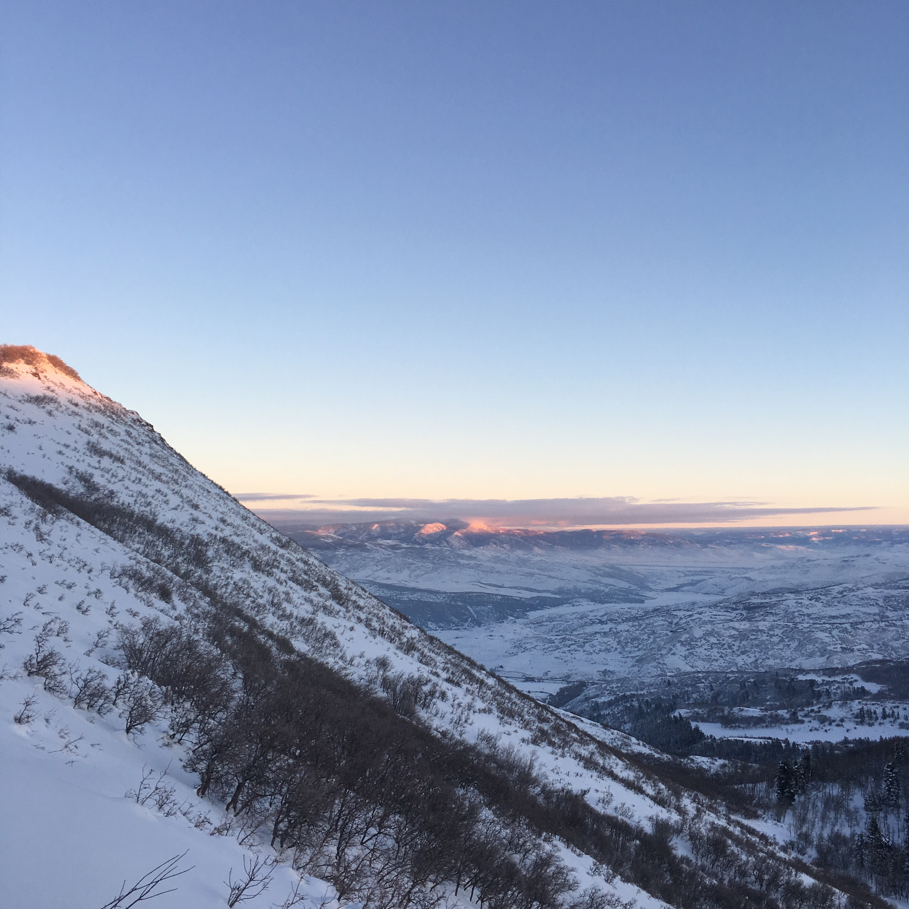
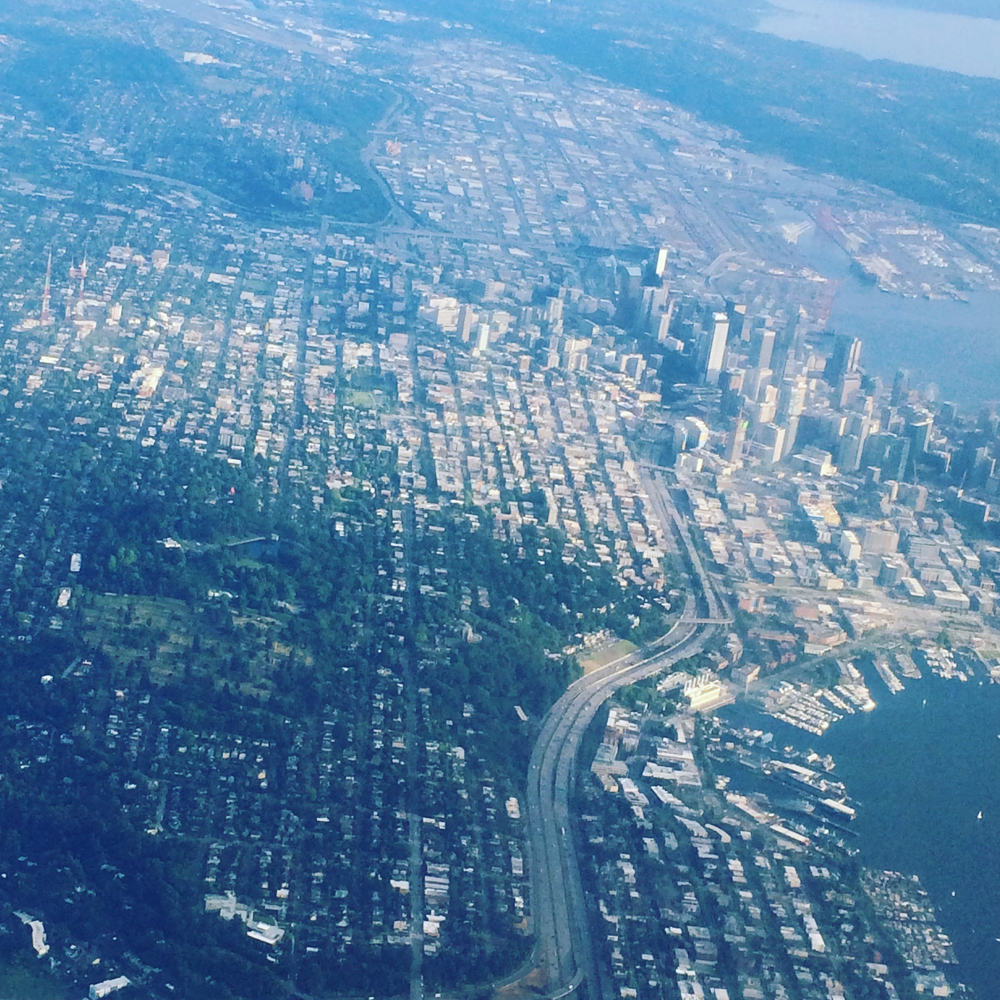
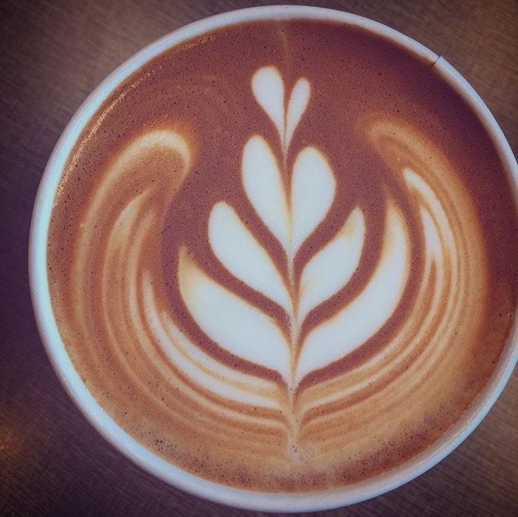
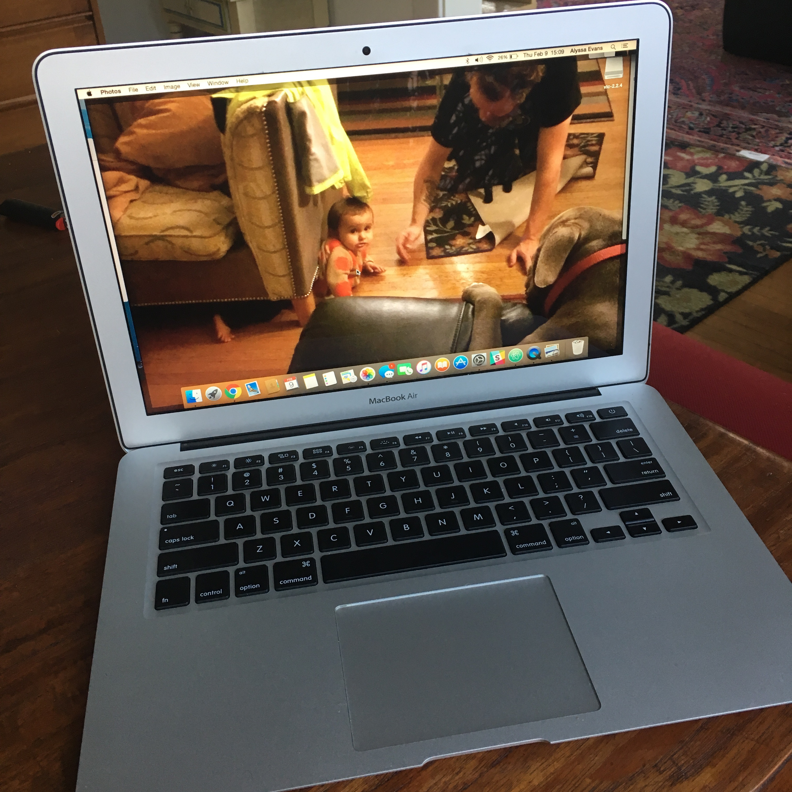
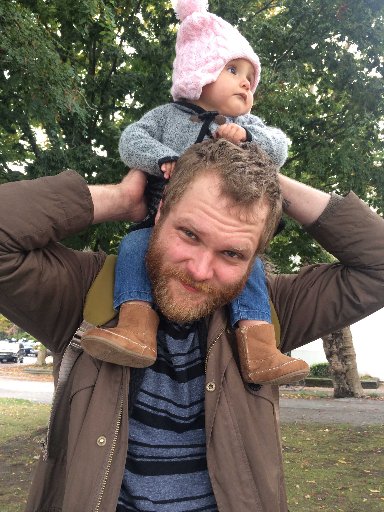
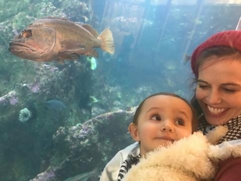
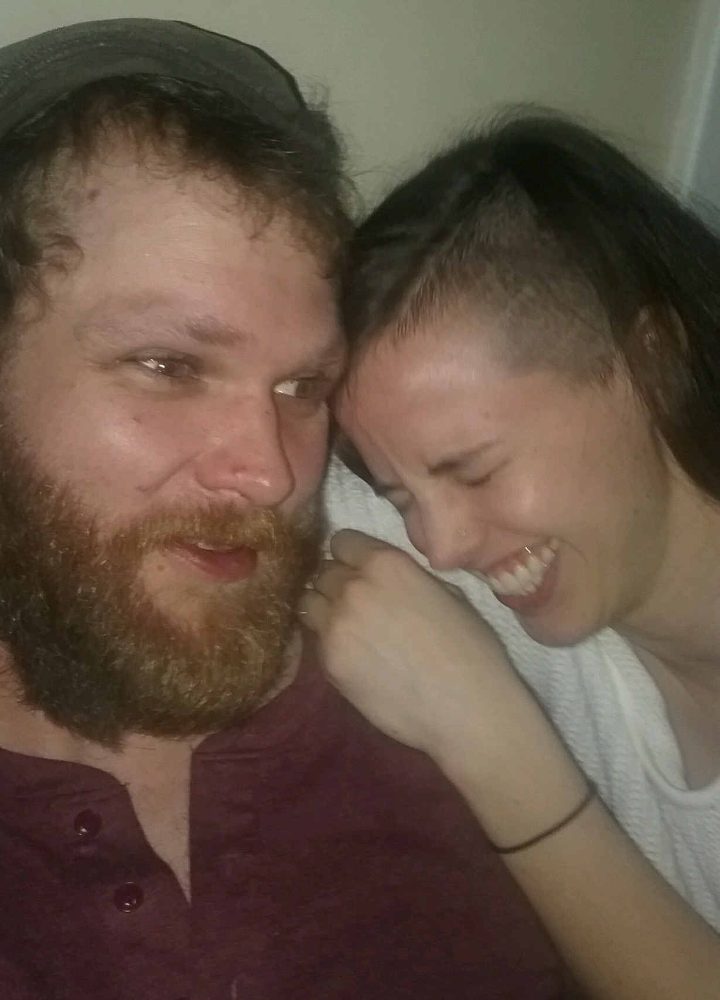
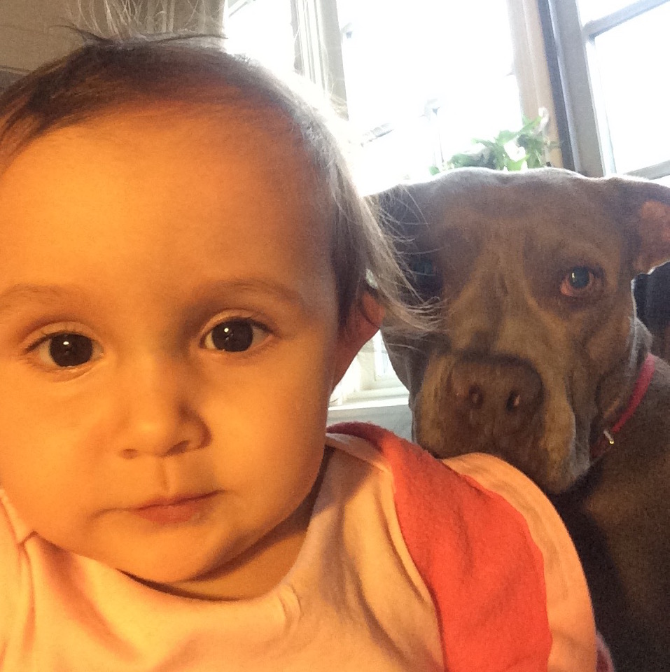

- Name: Alyssa.
- Age: 26.
- Mission: To be the very best, like no one ever was. (Get it? It's from Pokemon.)
- From:
Mountainous Salt Lake City
to sunny Seattle!
And from being a barista
to Galvanize!
Some fun facts about me!
I have a beehive! It's called The Collective; my queen's name is Lacutus. Sometimes I snapchat my bee progress and findings.
I really like comic books! My favorites are Saga, Sex Criminals, Scott Pilgrim, Lumberjanes, and Deadpool.
I'm a huge Trekkie. #TNG #liveLongAndProsper
I'm left handed. It's true. (You wouldn't believe how many people are amazed by this.)
In big and small ways, I have done a lot of teaching. I have taught children's tap and ballet, english as a foreign language, espresso and latte art, environmentalism 101, and sex education.
I like reading things out loud.
The dogs I love most (with different owners) are both named after flowers. (Rosie and Daisy)
I have an elephant tattoo on my back.
I am generally a weird and goofy person.
What else, Alyssa?
Although I don't get to see them as much as I'd like, I'm very close with my family. Most of them still live in Salt Lake, except for one sister in Arizona. I have two older sisters, two younger brothers, and we're all two years apart.


I live in a 5 bedroom house currently filled with 4 humans, 2 chihuahuas (that I forget live there), 1 pitbull, and thousands of bees. But they have their own house outside. We are a sort of community house, with lots of people coming in and out. We call our home "Snowhouse."


I like to spend a lot of time with my partner, and on weekends, his daughter. We're pretty goofy and have literally spent over 3 hours in a Fred Meyer before. (Not with the baby. That's crazy talk.)
   I love traveling and have spent time in Europe and Asia. Thailand is my favorite country so far; there I spent a month volunteering at an elephant sanctuary. I learned lots of things about elephants.


So if that's where I was, then where am I going?